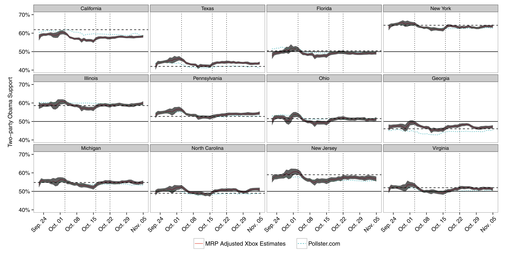
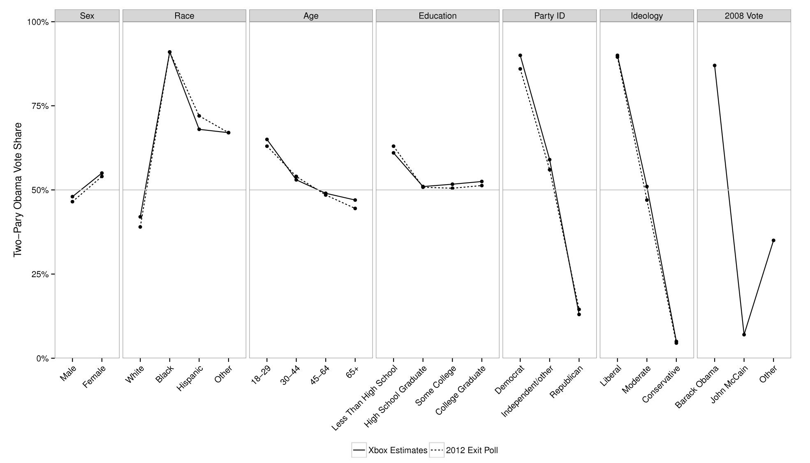
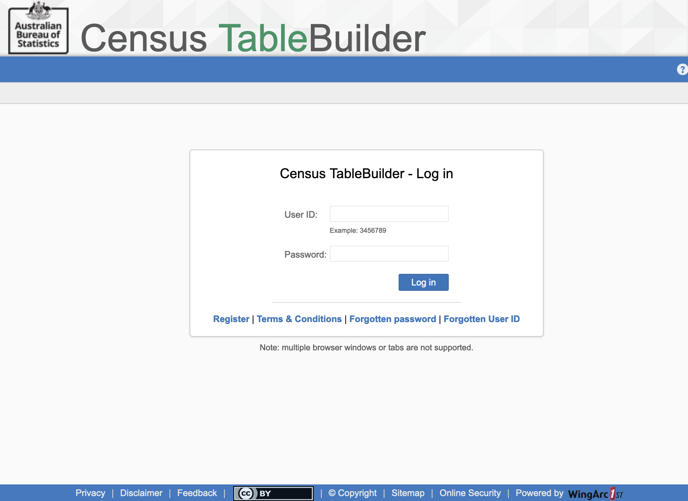
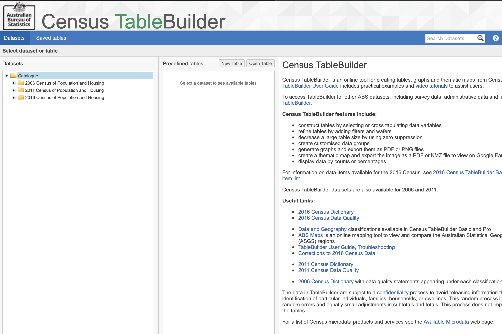
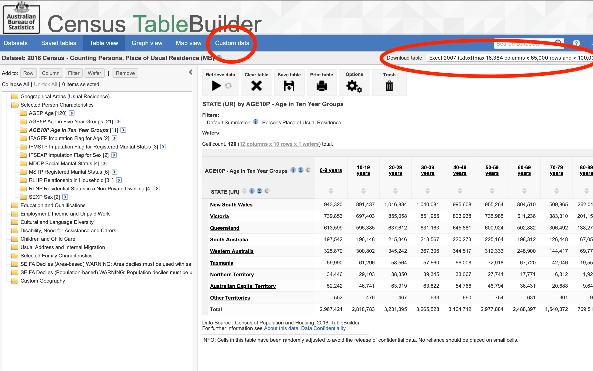
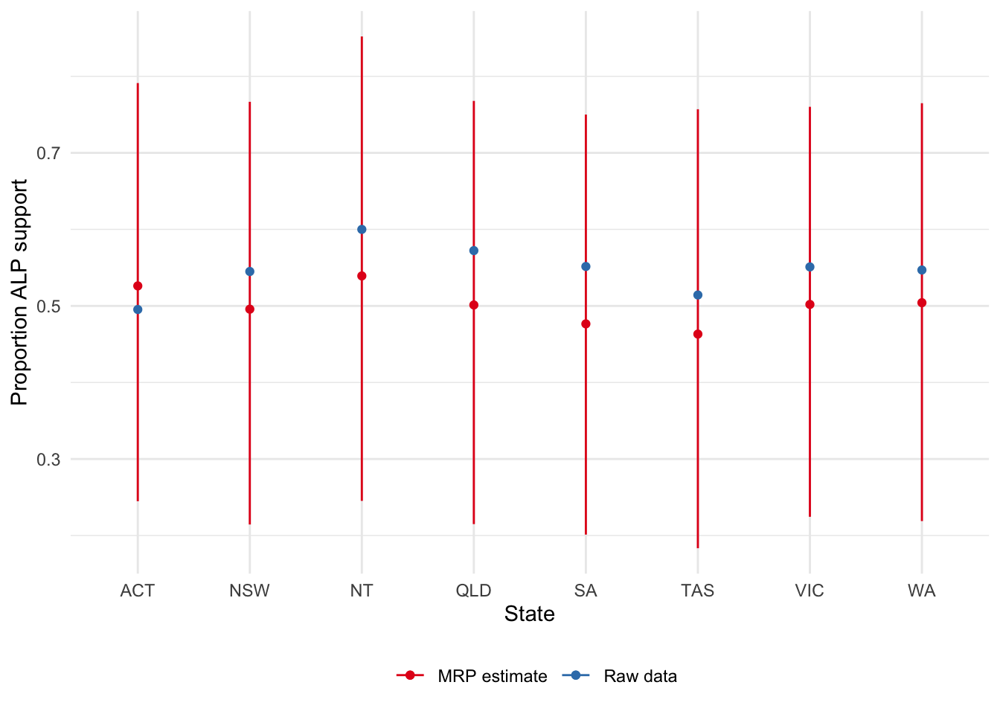
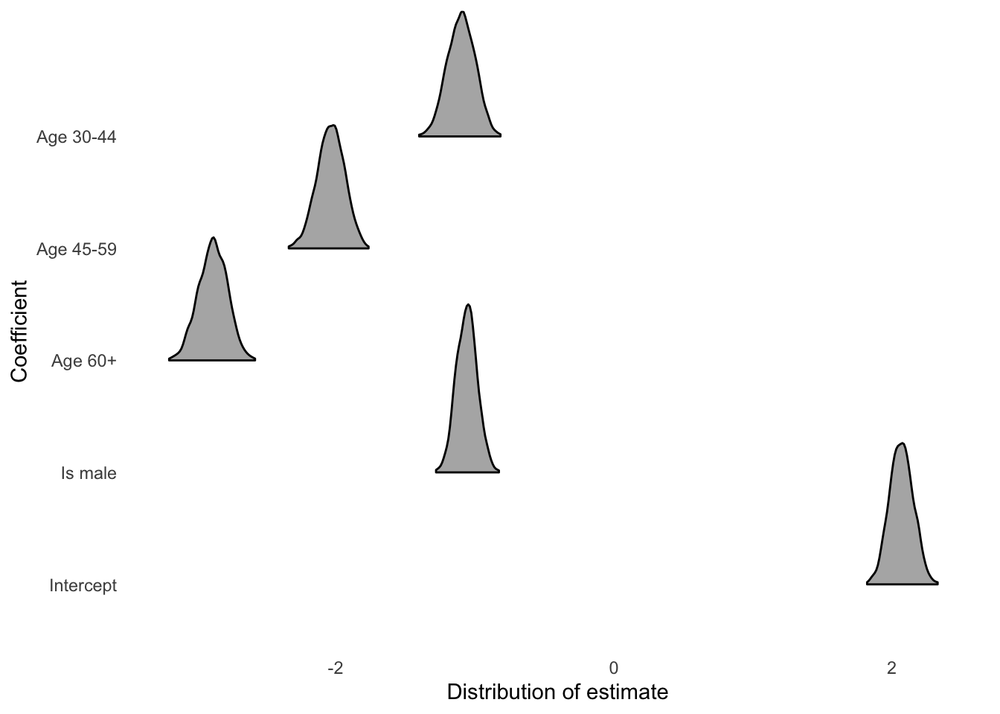

# Uncomment these (by deleting the #) if you need to install the packages
# install.packages("broom")
# install.packages("here")
# install.packages("skimr")
# install.packages("tidyverse")
library(broom) # Helps make the regression results tidier
library(here) # Helps make file referencing easier.
library(skimr) # Helps summarise the data
library(tidyverse) # Helps make programming with R easierGetting started with MRP
Multi-level regression with post-stratification (MRP) is a popular way to adjust non-representative samples to better analyse opinion and other survey responses. I recently ran a hands-on workshop at the ANU, aimed at interested, but not experienced, social scientists to help de-mystify MRP. The workshop aimed to give participants the ability and confidence to: 1) critically read papers that use it; and 2) apply it in their own work. Examples of how to implement MRP were illustrated in R using the brms package. The following post gives the outline of the workshop and the material and coding exercises covered.
Overview
Multi-level regression with post-stratification (MRP) is a popular way to adjust non-representative samples to better analyse opinion and other survey responses. It uses a regression model to relate individual-level survey responses to various characteristics and then rebuilds the sample to better match the population. In this way MRP can not only allow a better understanding of responses, but also allow us to analyse data that may otherwise be unusable. However, it can be a challenge to get started with MRP as the terminology may be unfamiliar, and the data requirements can be onerous.
The purpose of this hands-on workshop is to de-mystify MRP and give participants the ability and confidence to: 1) critically read papers that use it; and 2) apply it in their own work. Examples of how to implement MRP will be illustrated in R using the brms package. No experience with R is required but workshop participants should bring a laptop that is: a) connected to the internet; b) has R and R Studio installed, along with the tidyverse and brms packages (if you have a hassle doing this then come early to the workshop and I can help you).
The GitHub repo that you should download is: https://github.com/RohanAlexander/mrp_workshop.
Schedule
- 8:45 - 9:00: (Optional) Help with computer set-up.
- 9:00 - 9:15: Introduction, motivation, and example.
- 9:15 - 9:25: Live-coding introductory example.
- 9:25 - 9:45: Participants pair-code introductory example.
- 9:45 - 9:55: Live coding extended example.
- 10:00 - 10:30: Participants pair-code extended example.
- 10:30 - 10:50: Live example improving the workflow: gathering data from the ABS, improving the model, and communicating results.
- 10:50 - 11:00: Concluding remarks about strengths, weaknesses, and potential areas of application.
Help with computer set-up.
The primary programming language used for MRP tends to be R, but any similar language would be fine. That said, if you are already comfortable with another open source language, such as Python, then it wouldn’t hurt to learn R as well. You are welcome to use whatever language you are most comfortable with, but it will be easiest for you to be able to draw on other examples if you use R. All of the examples in this workshop are in R.
Computing
R can be downloaded for free from: http://cran.utstat.utoronto.ca/.
RStudio is an interface that makes using R easier and it can be downloaded for free from: https://rstudio.com/products/rstudio/download/.
We will use brms later in the tutorial. In order to use this your Mac needs to have Xcode and a bunch of other things installed. To do this go to: https://github.com/rmacoslib/r-macos-rtools#how-do-i-use-the-installer and within the ‘assets’ bit of the project’s release page, download ‘macos-rtools-3.1.0.pkg’ and then install that. It’ll take a few minutes because it is downloading and setting up a bunch of things.
Getting help
At some point your code won’t run or will throw an error. This is normal, and it happens to everyone. It happens to me on a daily, sometimes hourly, basis. Getting frustrated is understandable. There are a few steps that are worthwhile taking when this happens:
- If you are having issues with a particular function then the Help file for that function can be accessed by adding a ? to the front. e.g. ‘?lm’.
- If you’re getting an error then try googling it, (I find it can help to include the term ‘R’ and ‘MRP’ or ‘tidyverse’ or the relevant package name).
- If your code just isn’t running, then try searching for what you are trying to do, e.g. ‘save PDF of graph in R made using ggplot’. Almost always there are relevant blog posts or Stack Overflow answers that will help.
- Try to restart R and R Studio and load everything again.
- Try to restart your computer.
There are a few small mistakes that I often make and may be worth checking in case you make them too:
- check the class e.g. class(my_dataset$its_column) to make sure that is what it should be;
- when you’re using ggplot make sure you use ‘+’ not ‘%>%’;
- check whether you are using ‘.’ when you shouldn’t be, or vice versa.
It’s almost always helpful to take a break and come back the next day.
Introduction, motivation, and example
Multi-level regression with post-stratification (MRP) is a handy approach when dealing with survey data. Essentially, it trains a model based on the survey, and then applies that trained model to another dataset. There are two main, related, advantages:
- It can allow us to ‘re-weight’ in a way that includes uncertainty front-of-mind and isn’t hamstrung by small samples.
- It can allow us to use broad surveys to speak to subsets.
From a practical perspective, it tends to be less expensive to collect non-probability samples and so there are benefits of being able to use these types of data. That said, it is not a magic-bullet and the laws of statistics still apply. We will have larger uncertainty around our estimates and they will still be subject to all the usual biases. As Lauren Kennedy points out, ‘MRP has traditionally been used in probability surveys and had potential for non-probability surveys, but we’re not sure of the limitations at the moment.’
One famous example is Wei Wang, David Rothschild, Sharad Goel, and Andrew Gelman, 2014, ‘Forecasting elections with non-representative polls’, International Journal of Forecasting. They used data from the Xbox gaming platform to forecast the 2012 US Presidential Election.
Key facts about the set-up:
- Data from an opt-in poll which was available on the Xbox gaming platform during the 45 days preceding the 2012 US presidential election.
- Each day there were three to five questions, including voter intention: “If the election were held today, who would you vote for?”
- Respondents were allowed to answer at most once per day.
- First-time respondents were asked to provide information about themselves, including their sex, race, age, education, state, party ID, political ideology, and who they voted for in the 2008 presidential election.
- In total, 750,148 interviews were conducted, with 345,858 unique respondents - over 30,000 of whom completed five or more polls
- Young men dominate the Xbox population: 18-to-29-year-olds comprise 65 per cent of the Xbox dataset, compared to 19 per cent in the exit poll; and men make up 93 per cent of the Xbox sample but only 47 per cent of the electorate.
Given the US electorate, they use a two-stage modelling approach. The details don’t really matter too much, and essentially they model how likely a respondent is to vote for Obama, given various information such as state, education, sex, etc: \[ Pr\left(Y_i = \mbox{Obama} | Y_i\in\{\mbox{Obama, Romney}\}\right) = \mbox{logit}^{-1}(\alpha_0 + \alpha_1(\mbox{state last vote share}) + \alpha_{j[i]}^{\mbox{state}} + \alpha_{j[i]}^{\mbox{edu}} + \alpha_{j[i]}^{\mbox{sex}}... ) \] They run this in R using glmer() from lme4.
Having a trained model that considers the effect of these various independent variables on support for the candidates, they now post-stratify, where each of these “cell-level estimates are weighted by the proportion of the electorate in each cell and aggregated to the appropriate level (i.e., state or national).”
This means that they need cross-tabulated population data. In general, the census would have worked, or one of the other large surveys available in the US, but the difficulty is that the variables need to be available on a cross-tab basis. As such, they use exit polls (not an option for Australia in general).
They make state-specific estimates by post-stratifying to the features of each state. 
Similarly, they can examine demographic-differences. 
Finally, they convert their estimates into electoral college estimates. 
Live-coding introductory example
The workflow that we are going to use is:
- read in the poll;
- model the poll;
- read in the post-stratification data; and
- apply the model to the post-stratification data.
First load the packages.
Then load some sample polling data to analyse. I have generated this fictitious data so that we have some idea of what to expect from the model. The dependent variable is supports_ALP, which is a binary variable - either 0 or 1. We’ll just use two independent variables here: gender, which is either Female or Male (as that is what is available from the ABS); and age_group, which is one of four groups: ages 18 to 29, ages 30 to 44, ages 45 to 59, ages 60 plus.
example_poll <- read_csv("outputs/data/example_poll.csv") # Here we read in a
# CSV file and assign it to a dataset called 'example_poll'
head(example_poll) # Displays the first 10 rows# A tibble: 6 × 4
gender age_group supports_ALP state
<chr> <chr> <dbl> <chr>
1 Male ages30to44 0 NSW
2 Female ages45to59 0 NSW
3 Female ages60plus 1 VIC
4 Male ages30to44 1 QLD
5 Female ages30to44 1 QLD
6 Female ages18to29 1 VIC # Look at some summary statistics to make sure the data seem reasonable
summary(example_poll) gender age_group supports_ALP state
Length:5000 Length:5000 Min. :0.0000 Length:5000
Class :character Class :character 1st Qu.:0.0000 Class :character
Mode :character Mode :character Median :1.0000 Mode :character
Mean :0.5514
3rd Qu.:1.0000
Max. :1.0000 skimr::skim(example_poll)| Name | example_poll |
| Number of rows | 5000 |
| Number of columns | 4 |
| _______________________ | |
| Column type frequency: | |
| character | 3 |
| numeric | 1 |
| ________________________ | |
| Group variables | None |
Variable type: character
| skim_variable | n_missing | complete_rate | min | max | empty | n_unique | whitespace |
|---|---|---|---|---|---|---|---|
| gender | 0 | 1 | 4 | 6 | 0 | 2 | 0 |
| age_group | 0 | 1 | 10 | 10 | 0 | 4 | 0 |
| state | 0 | 1 | 2 | 3 | 0 | 8 | 0 |
Variable type: numeric
| skim_variable | n_missing | complete_rate | mean | sd | p0 | p25 | p50 | p75 | p100 | hist |
|---|---|---|---|---|---|---|---|---|---|---|
| supports_ALP | 0 | 1 | 0.55 | 0.5 | 0 | 0 | 1 | 1 | 1 | ▆▁▁▁▇ |
I generated this polling data to make both made males and older people less likely to vote for the Australian Labor Party; and females and younger people more likely to vote for the Labor Party. Females are over-sampled. As such, we should have an ALP skew on the dataset.
# The '%>%' is called a 'pipe' and it takes whatever the output is of the
# command before it, and pipes it to the command after it.
example_poll %>% # So we are taking our example_poll dataset and using it as an
# input to 'summarise'.
# summarise reduces the dimensions, so here we will get one number from a column.
summarise(raw_ALP_prop = sum(supports_ALP) / nrow(example_poll))# A tibble: 1 × 1
raw_ALP_prop
<dbl>
1 0.551Now we’d like to see if we can get our results back (we should find females less likely than males to vote for Australian Labor Party and that people are less likely to vote Australian Labor Party as they get older). Our model is: \[ \mbox{ALP support}_j = \mbox{gender}_j + \mbox{age_group}_j + \epsilon_j. \]
This model says that the probability that some person, \(j\), will vote for the Australian Labor Party depends on their gender and their age-group. Based on our simulated data, we would like older age-groups to be less likely to vote for the Australian Labor Party and for males to be less likely to vote for the Australian Labor Party.
# Here we are running an OLS regression with supports_ALP as the dependent variable
# and gender and age_group as the independent variables. The dataset that we are
# using is example_poll. We are then saving that OLS regression to a variable called 'model'.
model <- lm(supports_ALP ~ gender + age_group,
data = example_poll
)
# broom::tidy just displays the outputs of the regression in a nice table.
broom::tidy(model) # A tibble: 5 × 5
term estimate std.error statistic p.value
<chr> <dbl> <dbl> <dbl> <dbl>
1 (Intercept) 0.900 0.0131 68.8 0
2 genderMale -0.205 0.0142 -14.4 2.69e- 46
3 age_groupages30to44 -0.186 0.0176 -10.6 6.50e- 26
4 age_groupages45to59 -0.402 0.0177 -22.7 8.29e-109
5 age_groupages60plus -0.585 0.0175 -33.4 5.20e-221Essentially we’ve got our inputs back. We just used regular OLS even though our dependent variable is a binary. (It’s usually fine to start with an OLS model and then iterate toward an approach that may be more appropriate such as logistic regression or whatever, but where the results are a little more difficult to interpret.) If you wanted to do that then the place to start would be glmer() from the R package lme4, and we’ll see that in the next section.
Now we’d like to see if we can use what we found in the poll to get an estimate for each state based on their demographic features.
First read in some real demographic data, on a seat basis, from the ABS (we’ll go into the process of getting this later).
census_data <- read_csv("outputs/data/census_data.csv")
head(census_data)# A tibble: 6 × 5
state gender age_group number cell_prop_of_division_total
<chr> <chr> <chr> <dbl> <dbl>
1 ACT Female ages18to29 34683 0.125
2 ACT Female ages30to44 42980 0.155
3 ACT Female ages45to59 33769 0.122
4 ACT Female ages60plus 30322 0.109
5 ACT Male ages18to29 34163 0.123
6 ACT Male ages30to44 41288 0.149We’re just going to do some rough forecasts. For each gender and age_group we want the relevant coefficient in the example_data and we can construct the estimates.
# Here we are making predictions using our model with some new data from the
# census, and we saving the results of those predictions by adding a new column
# to the census_data dataset called 'estimate'.
census_data$estimate <-
model %>%
predict(newdata = census_data)
census_data %>%
mutate(alp_predict_prop = estimate*cell_prop_of_division_total) %>%
group_by(state) %>%
summarise(alp_predict = sum(alp_predict_prop))# A tibble: 8 × 2
state alp_predict
<chr> <dbl>
1 ACT 0.525
2 NSW 0.495
3 NT 0.541
4 QLD 0.496
5 SA 0.479
6 TAS 0.464
7 VIC 0.503
8 WA 0.503We now have post-stratified estimates for each division. Our model has a fair few weaknesses. For instance small cell counts are going to be problematic. And our approach ignores uncertainty, but now that we have something working we can complicate it.
Participants pair-code introductory example
Please break into pairs and with one person ‘driving’ (typing) and the other person ‘navigating’, and attempt to pair-code the introductory example.
If you run into issues then I am happy to help point you in the right direction. The full code of the example will be made available after the workshop, so it doesn’t matter if you’re not able to complete the example now.
As a reminder, our workflow is:
- read in the poll;
- model the poll;
- read in the post-stratification data;
- apply your model to the post-stratification data.
Get started by opening the Rproj file from the workshop repo and opening a new R script.
Live coding extended example
We’d like to address some of the major issues with our approach, specifically being able to deal with small cell counts, and also taking better account of uncertainty. As we are dealing with survey data, prediction intervals or something similar are crticial, and it’s not appropriate to only report central estimates. To do this we’ll use the same broad approach as before, but just improving bits of our workflow.
First load the packages.
# Uncomment these if you need to install the packages
# install.packages("broom")
# install.packages("brms")
# install.packages("here")
# install.packages("tidybayes")
# install.packages("tidyverse")
library(broom)
library(brms) # Used for the modelling
library(here)
library(tidybayes) # Used to help understand the modelling estimates
library(tidyverse) As before, read in the polling dataset.
example_poll <- read_csv("outputs/data/example_poll.csv")
head(example_poll)# A tibble: 6 × 4
gender age_group supports_ALP state
<chr> <chr> <dbl> <chr>
1 Male ages30to44 0 NSW
2 Female ages45to59 0 NSW
3 Female ages60plus 1 VIC
4 Male ages30to44 1 QLD
5 Female ages30to44 1 QLD
6 Female ages18to29 1 VIC Now, using the same basic model as before, but we move it to a setting that acknowledges the dependent variable as being binary, and in a Bayesian setting.
model <- brm(supports_ALP ~ gender + age_group,
data = example_poll,
family = bernoulli(),
file = "outputs/model/brms_model"
)
model <- read_rds("outputs/model/brms_model.rds")
summary(model) Family: bernoulli
Links: mu = logit
Formula: supports_ALP ~ gender + age_group
Data: example_poll (Number of observations: 5000)
Draws: 4 chains, each with iter = 2000; warmup = 1000; thin = 1;
total post-warmup draws = 4000
Population-Level Effects:
Estimate Est.Error l-95% CI u-95% CI Rhat Bulk_ESS Tail_ESS
Intercept 2.07 0.09 1.91 2.23 1.00 2240 2194
genderMale -1.06 0.07 -1.20 -0.91 1.00 3406 2595
age_groupages30to44 -1.10 0.10 -1.29 -0.91 1.00 2483 2805
age_groupages45to59 -2.04 0.10 -2.23 -1.85 1.00 2521 3061
age_groupages60plus -2.88 0.10 -3.09 -2.68 1.00 2517 2858
Draws were sampled using sampling(NUTS). For each parameter, Bulk_ESS
and Tail_ESS are effective sample size measures, and Rhat is the potential
scale reduction factor on split chains (at convergence, Rhat = 1).We’ve moved to the Bernoulli distribution, so we have to do a bit more work to understand our results, but we are broadly getting back what we’d expect.
As before, we’d like an estimate for each state based on their demographic features and start by reading in the data.
census_data <- read_csv("outputs/data/census_data.csv")
head(census_data)# A tibble: 6 × 5
state gender age_group number cell_prop_of_division_total
<chr> <chr> <chr> <dbl> <dbl>
1 ACT Female ages18to29 34683 0.125
2 ACT Female ages30to44 42980 0.155
3 ACT Female ages45to59 33769 0.122
4 ACT Female ages60plus 30322 0.109
5 ACT Male ages18to29 34163 0.123
6 ACT Male ages30to44 41288 0.149We’re just going to do some rough forecasts. For each gender and age_group we want the relevant coefficient in the example_data and we can construct the estimates (this code is from Monica Alexander, https://www.monicaalexander.com/posts/2019-08-07-mrp/).
post_stratified_estimates <-
model %>%
tidybayes::add_predicted_draws(newdata = census_data) %>%
rename(alp_predict = .prediction) %>%
mutate(alp_predict_prop = alp_predict*cell_prop_of_division_total) %>%
group_by(state, .draw) %>%
summarise(alp_predict = sum(alp_predict_prop)) %>%
group_by(state) %>%
summarise(mean = mean(alp_predict),
lower = quantile(alp_predict, 0.025),
upper = quantile(alp_predict, 0.975))`summarise()` has grouped output by 'state'. You can override using the
`.groups` argument.post_stratified_estimates# A tibble: 8 × 4
state mean lower upper
<chr> <dbl> <dbl> <dbl>
1 ACT 0.525 0.243 0.791
2 NSW 0.497 0.214 0.767
3 NT 0.535 0.253 0.852
4 QLD 0.494 0.215 0.768
5 SA 0.475 0.201 0.762
6 TAS 0.464 0.183 0.757
7 VIC 0.504 0.224 0.760
8 WA 0.501 0.219 0.774We now have post-stratified estimates for each division. Our new Bayesian approach will enable us to think more deeply about uncertainty. We could complicate this in a variety of ways including adding more coefficients (but remember that we’d need to get new cell counts), or adding some layers.
Participants pair-code extended example
Please break into the same pairs as before, but swap who is typing, and attempt to pair-code the extended example.
If you run into issues then I am happy to help point you in the right direction. The full code of the example will be made available after the workshop, so it doesn’t matter if you’re not able to complete the example now.
As a reminder, our workflow is:
- read in the poll;
- model the poll;
- read in the post-stratification data;
- apply your model to the post-stratification data.
Live coding
I will now briefly demonstrate some other aspects that may be useful to improve three aspects of our MRP workflow:
- (Workflow step 2) adding some more complexity to our model; and
- (Workflow step 3) gathering and preparing some data from the ABS that we could use to post-stratify on.
We will also add a fifth stage to our workflow: Communicating our results.
Adding layers
We may like to try to add some layers to our model. For instance, we may like a different intercept for each state.
model_states <- brm(supports_ALP ~ gender + age_group + (1|state),
data = example_poll,
family = bernoulli(),
file = "outputs/model/brms_model_states",
control = list(adapt_delta = 0.90)
)
summary(model_states) Family: bernoulli
Links: mu = logit
Formula: supports_ALP ~ gender + age_group + (1 | state)
Data: example_poll (Number of observations: 5000)
Draws: 4 chains, each with iter = 2000; warmup = 1000; thin = 1;
total post-warmup draws = 4000
Group-Level Effects:
~state (Number of levels: 8)
Estimate Est.Error l-95% CI u-95% CI Rhat Bulk_ESS Tail_ESS
sd(Intercept) 0.06 0.05 0.00 0.20 1.00 1554 2072
Population-Level Effects:
Estimate Est.Error l-95% CI u-95% CI Rhat Bulk_ESS Tail_ESS
Intercept 2.07 0.09 1.90 2.26 1.00 1660 2273
genderMale -1.06 0.08 -1.21 -0.91 1.00 4109 2833
age_groupages30to44 -1.10 0.10 -1.30 -0.90 1.00 2110 2566
age_groupages45to59 -2.04 0.10 -2.24 -1.84 1.00 2058 2347
age_groupages60plus -2.89 0.10 -3.10 -2.69 1.00 2201 2581
Draws were sampled using sampling(NUTS). For each parameter, Bulk_ESS
and Tail_ESS are effective sample size measures, and Rhat is the potential
scale reduction factor on split chains (at convergence, Rhat = 1).broom.mixed::tidy(model_states, par_type = "varying")Warning in tidy.brmsfit(model_states, par_type = "varying"): some parameter
names contain underscores: term naming may be unreliable!# A tibble: 6 × 8
effect component group term estimate std.error conf.low conf.high
<chr> <chr> <chr> <chr> <dbl> <dbl> <dbl> <dbl>
1 fixed cond <NA> (Intercept) 2.07 0.0916 1.90 2.26
2 fixed cond <NA> genderMale -1.06 0.0768 -1.21 -0.909
3 fixed cond <NA> age_groupages3… -1.10 0.102 -1.30 -0.899
4 fixed cond <NA> age_groupages4… -2.04 0.101 -2.24 -1.84
5 fixed cond <NA> age_groupages6… -2.89 0.105 -3.10 -2.69
6 ran_pars cond state sd__(Intercept) 0.0592 0.0517 0.00247 0.195broom.mixed::tidy(model_states, par_type = "non-varying", robust = TRUE)Warning in tidy.brmsfit(model_states, par_type = "non-varying", robust = TRUE):
some parameter names contain underscores: term naming may be unreliable!# A tibble: 6 × 8
effect component group term estimate std.error conf.low conf.high
<chr> <chr> <chr> <chr> <dbl> <dbl> <dbl> <dbl>
1 fixed cond <NA> (Intercept) 2.07 0.0899 1.90 2.26
2 fixed cond <NA> genderMale -1.06 0.0741 -1.21 -0.909
3 fixed cond <NA> age_groupages3… -1.10 0.104 -1.30 -0.899
4 fixed cond <NA> age_groupages4… -2.04 0.101 -2.24 -1.84
5 fixed cond <NA> age_groupages6… -2.88 0.104 -3.10 -2.69
6 ran_pars cond state sd__(Intercept) 0.0474 0.0412 0.00247 0.195One interesting aspect is that our multi-level approach will allow us to deal with small cell counts by borrowing information from other cells.
example_poll %>%
count(state)# A tibble: 8 × 2
state n
<chr> <int>
1 ACT 107
2 NSW 1622
3 NT 50
4 QLD 982
5 SA 359
6 TAS 105
7 VIC 1285
8 WA 490At the moment we have 50 respondents in the Northern Territory, 105 in Tasmania, and 107 in the ACT. Even if we were to remove most of the, say, 18 to 29 year old, male respondents from Tasmania our model would still provide estimates. It does this by pooling, in which the effect of these young, male, Tasmanians is partially determined by other cells that do have respondents.
Gathering data
Getting data tends to be the most troublesome aspect. I’ve found that the census is fairly useful although it can require some trade-offs (e.g. if you are doing political work then it’s not exactly the same as the electoral roll even if you restrict it to Australian citizens aged at least 18). Nonetheless, I’ve found the best way to get the sub-cell counts is to use ABS TableBuilder. There are two versions - ‘basic’ which is free, and ‘pro’, which is normally $2,510 per year, but which you can get access to if you’re associated with an Australian university.

Once you create an account then you can access census data for 2006, 2011, and 2016. (The ABS have relatively recently done some linking between censuses so there is actually some linked data, which is exciting).

The website is a bit cumbersome, but considering what they provide it is worth sticking with it. I usually use ‘Counting Persons, Place of Usual Residence’, but sometimes ‘Counting Persons, Place of Enumeration’ is also handy.

We want to create a new table, and we do this by specifying the columns and rows.

Once you have the set-up that you want then you can retrieve the data.

You can download the data in various Excel, CSV, and other formats. If your dataset is large then you may need to submit for it to be built, which can take a day or two. Finally, if your sub-cell counts are especially small, then they will be blown around by the randomness that the ABS adds.

Helpfully you can create custom groupings for geography, say to load specific electorates, and other aspects, such as age-groups. To get started with this, select ‘Custom data’.
Communication
There are many interesting aspects that we may like to communicate to others. For instance, we may like to show how the model is affecting the results. We can make a graph that compares the raw estimate with the model estimate.
post_stratified_estimates %>%
ggplot(aes(y = mean, x = forcats::fct_inorder(state), color = "MRP estimate")) +
geom_point() +
geom_errorbar(aes(ymin = lower, ymax = upper), width = 0) +
ylab("Proportion ALP support") +
xlab("State") +
geom_point(data = example_poll %>%
group_by(state, supports_ALP) %>%
summarise(n = n()) %>%
group_by(state) %>%
mutate(prop = n/sum(n)) %>%
filter(supports_ALP==1),
aes(state, prop, color = "Raw data")) +
theme_minimal() +
scale_color_brewer(palette = "Set1") +
theme(legend.position = "bottom") +
theme(legend.title = element_blank())`summarise()` has grouped output by 'state'. You can override using the
`.groups` argument.
Similarly, we may like to plot the distribution of the coefficients.
model %>%
gather_draws(`b_.*`, regex=TRUE) %>%
ungroup() %>%
mutate(coefficient = stringr::str_replace_all(.variable, c("b_" = ""))) %>%
mutate(coefficient = forcats::fct_recode(coefficient,
Intercept = "Intercept",
`Is male` = "genderMale",
`Age 30-44` = "age_groupages30to44",
`Age 45-59` = "age_groupages45to59",
`Age 60+` = "age_groupages60plus"
)) %>%
# both %>%
ggplot(aes(y=fct_rev(coefficient), x = .value)) +
ggridges::geom_density_ridges2(aes(height = ..density..),
rel_min_height = 0.01,
stat = "density",
scale=1.5) +
xlab("Distribution of estimate") +
ylab("Coefficient") +
scale_fill_brewer(name = "Dataset: ", palette = "Set1") +
theme_minimal() +
theme(panel.grid.major = element_blank(),
panel.grid.minor = element_blank()) +
theme(legend.position = "bottom")Warning: The dot-dot notation (`..density..`) was deprecated in ggplot2 3.4.0.
ℹ Please use `after_stat(density)` instead.
Concluding remarks
In general, MRP is a good way to accomplish specific aims, but it’s not without trade-offs. If you have a good quality survey, then it may be a way to speak to disaggregated aspects of it. Or if you are concerned about uncertainty then it is a good way to think about that. If you have a biased survey then it’s a great place to start, but it’s not a panacea.
There’s not a lot of work that’s been done using Australian data, so there’s plenty of scope for exciting work. I look forward to seeing what you do with it!
Next steps
There are a lot of resources out there that would make great next steps. I recommend having a look at the following resources to see which speaks best to your interests and background.
- Alexander, Monica, 2019, ‘Analyzing name changes after marriage using a non-representative survey’, available at: https://www.monicaalexander.com/posts/2019-08-07-mrp/.
- Kennedy, Lauren, and Jonah Gabry, 2019, ‘MRP with rstanarm’, available at: https://mc-stan.org/rstanarm/articles/mrp.html.
- Kennedy, Lauren, and Andrew Gelman, 2019, ‘Know your population and know your model: Using model-based regression and poststratification to generalize findings beyond the observed sample’, available at: https://arxiv.org/abs/1906.11323.
- Kastellec, Jonathan, Jeffrey Lax, and Justin Phillips, 2016, ‘Estimating State Public Opinion With Multi-Level Regression and Poststratification using R’, available at: https://scholar.princeton.edu/sites/default/files/jkastellec/files/mrp_primer.pdf.
- Hanretty, Chris, 2019, ‘An introduction to multilevel regression and post-stratification for estimating constituency opinion’, available at: https://journals.sagepub.com/doi/abs/10.1177/1478929919864773.
- Downes, Marnie, Lyle Gurrin, Dallas English, Jane Pirkis, Dianne Currier, Matthew Spittal, and John Carlin, 2018, ‘Multilevel Regression and Poststratification: A Modeling Approach to Estimating Population Quantities From Highly Selected Survey Samples’, available at: https://www.ncbi.nlm.nih.gov/pubmed/29635276.
- Jackman, Simon, Shaun Ratcliff, and Luke Mansillo, 2019, ‘Small area estimates of public opinion: Model-assisted post-stratification of data from voter advice applications’, available at: https://www.cambridge.org/core/membership/services/aop-file-manager/file/5c2f6ebb7cf9ee1118d11c0a/APMM-2019-Simon-Jackman.pdf
- (Self-promotion alert) Alexander, Rohan, Patrick Dumont, and Patrick Leslie, 2019, ‘Forecasting Multi-District Election’, available at: https://github.com/RohanAlexander/ForecastingMultiDistrictElections.
If you don’t have survey data, then there is some individual-level data available on the Australian Data Archive: https://ada.edu.au. You will need to request access to the datasets, but they are very keen for people to use their data and will help you through the process if needed.